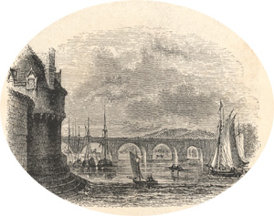
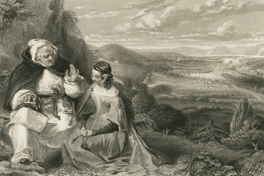
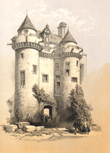

|
|
||
|
|
Home | Corson Collection | Biography | Works | Image Collection | Recent Publications | Portraits | Correspondence | Forthcoming Events | Links | E-Texts | Contact St. Valentine's Day; or, The Fair Maid of Perth(Chronicles of the Canongate, Second Series)First Edition, First Impression: Chronicles of the Canongate. Second Series. By the Author of "Waverley", &c. In Three Volumes. Vol. I (II-III). Edinburgh: Printed for Cadell and Co., Edinburgh; And Simpkin and Marshall, London, 1828. Composition | Sources | Synopsis | Reception | Links CompositionThe Fair Maid of Perth, Scott's first novel since Woodstock (1826), was published on May 15, 1828 as the Second Series of Chronicles of the Canongate. Scott's original plan, however, had been to compile a miscellany of shorter fiction in the manner of the First Series of Chronicles. The contract for the Second Series was signed on 29 November 1827 and by 3 December he had completed an introductory narrative by 'Chrystal Croftangry' and two short tales 'My Aunt Margaret's Mirror' and 'The Death of the Laird's Jock'. Scott was momentarily uncertain how to proceed, declaring in his Journal for 4 December that he felt 'a little puzzled about the character and style of the next tale'. The world, he feared, was sated with tales of chivalry, although James Ballantyne was once again urging him in that direction. By the next day, he believed he had hit upon a means of refreshing potentially stale subject-matter. His new tale, provisionally titled 'The North Inch of Perth' would deal with a ceremonial battle in 1396 in which the champions of two Highland Clans fought to settle a grievance in the presence of King Robert III and his court. What particularly caught Scott's imagination was the tradition that one of the champions had fled the field either before or during the combat. 'Suppose', Scott wrote in his Journal for 5 December 'a man's nerves supported by feelings of honour, or say by the spur of jealousy supporting him against constitutional timidity to a certain point, then suddenly giving way,—I think something tragic might be produced.' The theme of the 'brave coward or cowardly brave man' would be embodied in the finished narrative by Conachar, chief of Clan Quhele. Scott began work on 7 December and was making steady progress when on 11 December he was shaken by a letter from his publisher Robert Cadell. Cadell, backed by James Ballantyne, pointed to the moderate success of the First Series of Chronicles and expressed dissatisfaction with the two tales and introductory narrative so far submitted for the Second Series. Scott initially responded with an acknowledgement that inspiration was wearing thin and a suggestion that he take a break from writing. His Journal for 12 December acknowledges, however, that his financial circumstances would permit no rest. In particular, he and Cadell had been hoping to use the anticipated profits of the Second Series of Chronicles to bid for a half-share in the copyright of the earlier Waverley Novels which was being auctioned by Archibald Constable's creditors on 20 December. Their ultimately successful bid would pave the way for the publication of the lucrative 'Magnum Opus' edition of Scott's fiction (1829-33). On further reflection, then, he suggested to Ballantyne and Cadell that he abandon 'the losing game of novel writing' for another field of literature. The two men, both financially dependent on Scott's success as a novelist, were horrified. A compromise was hammered out. Scott would continue work on the Chronicles but would omit 'My Aunt Margaret's Mirror' and 'The Death of the Laird's Joke', radically reduce the Croftangry narrative, and concentrate on the 'Perth' tale, the opening pages of which Cadell and Ballantyne had now seen and approved. Originally conceived as a short-story, this was now recast as a three-volume novel. (Scott would subsequently publish the rejected tales in Frederic Reynold's annual Christmas gift-book The Keepsake. Together with 'The Tapestried Chamber', they are generally known as the Keepsake Stories.) By 15 December Scott was back at work on what was now known as 'Saint Valentine's Eve'. After an extended Christmas break, the first volume was complete by 5 February 1828. In his Journal Scott declared himself 'but indifferently pleased', fearing that 'either the kind of thing is worn out or I am worn out myself'. Ballantyne too was unenthusiastic, objecting to the murder of Oliver Proudfute and regretting the tragic bent of the tale. The remaining volumes were written at extraordinary speed, even by Scott's exceptional standards. The second volume was complete on 2 March, Scott again proclaiming himself 'not much pleased with it' and lamenting its lack of 'passion'. The third and final volume was complete by 29 March, although Scott was not satisfied that he had convincingly bound together the novel's three narrative threads: the clan fight and cowardice of Conachar, the love affair between Henry Smith and Catherine Glover, and the involvement of the Duke of Rothsay and other historical characters. He was, though, proud of his industry: 'I have let no grass grow beneath my heels this bout.' SourcesScott had long been familiar with the historical and legendary core material from which the novel grew. As far back as Rob Roy (1818), there is a reference to the artisan Henry Smith or Gow who, according to legend, made up the numbers for one of the clans in the 1396 battle when it found itself a man short. Scott drew extensively on medieval and Renaissance sources: John Barbour's The Bruce, Blind Hary's The Wallace, Andrew of Wyntoun's Original Chronicle of Scotland, John of Fordun's Chronica gentis scotorum, Walter Bower's Scotichronicon, and Boece's Scotorum historiae. Two later sources proved particularly fruitful: Henry Adamson's The Muses Threnodie (1638) for its poetical history of Perth and John Pinkerton's History of Scotland under the House of Stuart (1797) for its portrayal of Robert III, Albany, Rothsay, and Ramorny. Scott's sources permitted him ample liberty of invention. Details
of the battle are scarce, and there is not even general agreement
on which clans were involved. In the Introduction, Scott's narrator
Chrystal Croftangry explains that he prefers to avoid 'the well
known paths of history, where every one can read the finger  SynopsisThe novel is set in the late fourteenth century during the reign of Robert III of Scotland. The King's son, the Duke of Rothsay, attempts to abduct Catharine Glover, the 'Fair Maid of Perth', daughter of an honest burgher. He is thwarted by the intervention of Henry Smith or Gow, an armourer and renowned swordsman, who hacks off the hand of Sir John Ramorny, the Duke's Master of Horse. Although backed by Catharine's father Simon, Henry appears too warlike to win the hand of the mild-mannered 'Maid'. Ramorny tries and fails to avenge himself on Henry, then vents his anger on Rothsay, who has dismissed him at his father's behest. Rothsay is lured to the castle of Falkland and murdered; the crime is discovered and Ramorny promptly executed. Meanwhile, a bitter rivalry develops between Henry and Conachar, his Highland apprentice, as both contend for Catharine's affections. Conachar becomes chief of Clan Quhele after the death of his father, and the King demands that the longstanding feud between Clan Quhele and Clan Chattan be resolved by mortal combat between thirty members of each clan. At the last moment one of the representatives of Clan Chattan withdraws and is replaced by Henry who relishes the opportunity of confronting Conachar. At the end of a bloody battle, the two come face to face. Betrayed by his constitutional cowardice, Conachar flees and, overcome with shame, commits suicide. Henry, weary of battle and bloodshed, vows that henceforth he will only fight in Scotland's service, and is finally accepted by Catharine.  ReceptionThe Fair Maid of Perth was an immense and immediate success, winning applause from no less a figure than Goethe. Criticism was almost unanimously favourable, with the Athenaeum declaring that it 'may fairly be ranked as equal with the best and most admired productions of the author'. Scott was modest about the success of the novel but in his Journal he wrote proudly: 'I can spin a tough yarn still' (5 June 1828). Together with Redgauntlet, The Fair Maid of Perth represents one of the peaks of Scott's late career. Links
Last updated: 19-Dec-2011 |
|